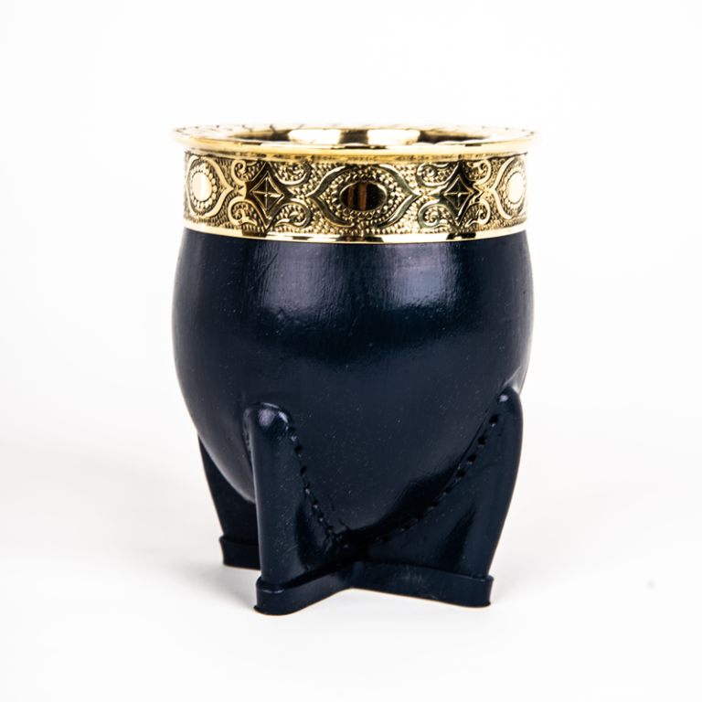

Nuestros Productos Destacados

Mate Artesanal
$13.499

Termo Stanley Negro
$158.399

Taragüi (yerba mate)
$2000
Mate, yerba y tradición desde Dufaur.
Ver Productos$13.499
$158.399
$2000
En Sabor a Dufaur, celebramos la tradición matera con productos que conectan lo mejor del campo argentino con la vida cotidiana. Desde Dufaur, ofrecemos mates, yerba y más, con el sabor auténtico del campo.